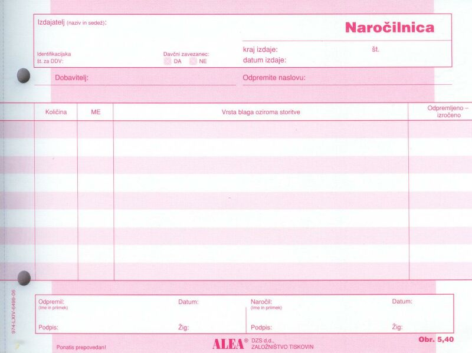
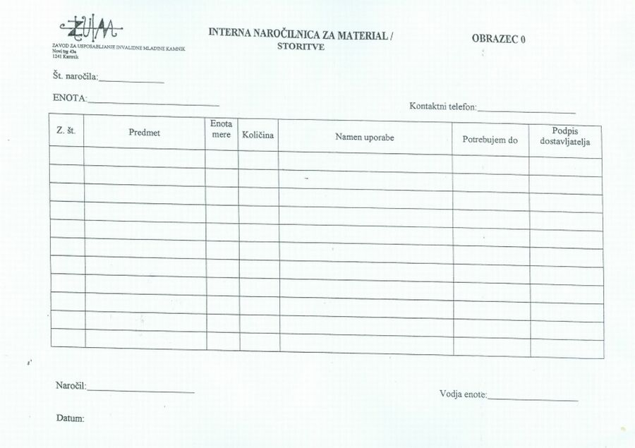

|
Naloga delovne dokumentacije je natanèen opis dogodka, procesa ali predmeta obravnave. Delovni dokumenti vsebujejo vse potrebne podatke, ki enolièno opišejo dogodek: datum, èas, kraj, odgovorne osebe, predmet obravnave. Vsaka organizacija potrebuje za doseganje svojih ciljev tudi potrošne materiale. Potrošni materiali so papir, kartuše, pisala, energija, gorivo. Te pridobiva organizacija od virov in partnerjev v svojem okolju. Kot primer vzemimo ZUIM Kamnik. Cilj te organizacije je opravljanje vzgojno izobraževalne dejavnosti in zdravstvene dejavnosti. Tisti del ZUIM, ki izvaja vzgojno izobraževalno dejavnost, potrebuje za to raèunalnike, projektorje, pisala, papir, kartuše, pa še veliko drugega materiala. Èe potrebuje uèitelj za tiskalnik nove kartuše, mora to sporoèiti tehniški službi ZUIM, ki je zadolžena za nabavo materiala. To stori na posebnem obrazcu. Ta obrazec služi naroèanju novega (potrošnega) materiala. Primer: Uèna podjeta na Srednji šoli ZUIM potrebujejo tri èrne kartuše HP336 in tri barvne kartuše HP342 za tiskalnik HP Deskjet 5440. Nujno morajo namreè natiskati nekaj izvodov katalogov za bližajoèi se sejem uènih podjetij v Celju. Za naroèilo je zadolžen mentor za informatiko profesor Èeferin. Oglejmo si nekaj podatkov v splošni naroèilnici: 1. Dobavitelj - to je organizacija, ki oskrbi ZUIM z želenim materialom, v našem primeru papirnica. 2. Odpremite naslovu - to je naslov naroènika, v našem primeru ZUIM. 3. Kolièina - v obliki MERSKEGA ŠTEVILA podana kolièina želenega materiala, denimo 6 (šest). 4. ME - merska enota želenega materiala, denimo kartuše ali kosi. 5. Odpremljeno - izroèeno - datum dostave naroèenega materiala.  Slika 1: Splošni obrazec za naroèilnico  Slika 2: Interna naroèilnica v ZUIM Kamnik 1. Vprašanja za usmerjanje pozornosti in usvajanje novih besed: 1. Katere podatke mora vsebovati delovna dokumentacija? 2. Kako se imenuje obrazec, s pomoèjo katerega naroèi organizacija material, ki ga potrebuje za doseganje svojih ciljev? 3. Naštej podatke, ki jih vsebuje splošna naroèilnica. To so rubrike ali stolpci v obrazcu. 4. Naštej podatke, ki jih vsebuje interna naroèilnica ZUIM. To so rubrike ali stolpci v obrazcu. 5. Koliko znaša mersko število v primeru iz besedila? 6. Koliko znaša merska enota v primeru iz besedila? 7. Kako je oznaèena merska enota v primeru iz besedila? 8. Na sliki te uène enote poskusi ugotoviti, kdo izdaja obrazce za splošne naroèilnice? 9. Na sliki te uène enote poskusi ugotoviti številko oziroma oznako obrazca splošne naroèilnice? 2. Zapiši od ene do pet kljuènih besed, ki povzemajo vsebino te uène enote. 3. Vprašanja za razmislek, ponavljanje in povezovanje z lastno izkušnjo: 1. Od katere organizacije pridobi ZUIM po tvojem mnenju elektrièno energijo? 2. Od katere organizacije pridobi ZUIM po tvojem mnenju papir, pisala, kartuše in ostali pisarniški material? 3. Od katere organizacije pridobi ZUIM po tvojem mnenju pogonsko gorivo za vozila iz svojega voznega parka? 4. Kako je oznaèena merska enota v interni naroèilnici ZUIM? Pomagaj si s sliko. 5. Kako je oznaèeno mersko število v interni naroèilnici ZUIM? Pomagaj si s sliko. 4. Domaèa naloga: V enem do petih stavkih zapiši, kaj ti je v tej uèni enoti najbolj ostalo v spominu. |